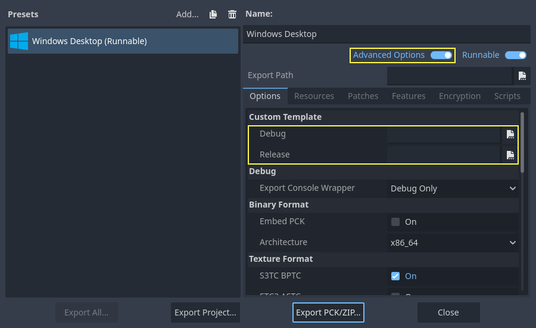

Biên dịch cho Windows
Xem thêm
Trang này mô tả cách biên dịch các binary trình chỉnh sửa và export template cho Windows từ mã nguồn. Nếu bạn muốn xuất dự án sang Windows, hãy đọc Xuất cho Windows.
Yêu cầu
Để biên dịch trên Windows, bạn cần những thứ sau:
Một trình biên dịch C++. Dùng một trong những trình biên dịch sau:
Visual Studio Community, phiên bản 2019 trở lên. Khuyến nghị dùng Visual Studio 2022. Trong quá trình cài đặt, hãy chọn C++ trong danh sách workload, và chọn các thành phần riêng lẻ sau:
MSVC v142 - VS 2019 C++ {arch} build tools (Latest) cho các kiến trúc đích.
Windows 11 SDK (10.0.22621.0) (đúng phiên bản này).
MSVC v143 - VS 2022 C++ {arch} build tools (Latest) cho các kiến trúc đích.
Windows 11 SDK (10.0.22621.0) hoặc mới hơn.
MSVC Build Tools for {arch} (Latest) cho các kiến trúc đích.
Windows 11 SDK (10.0.22621.0) hoặc mới hơn.
Nếu bạn đã cài Visual Studio mà không có hỗ trợ C++ cho kiến trúc đích, hoặc không có Windows SDK, hãy chạy lại trình cài đặt; nó sẽ hiển thị nút Modify. Hỗ trợ
x86_64,x86_32vàarm64.MinGW-w64 với GCC có thể dùng thay thế cho Visual Studio. Hãy đảm bảo cài đặt/cấu hình nó dùng mô hình luồng
posix. Quan trọng: Khi dùng MinGW để biên dịch nhánhmaster, bạn cần GCC 12 trở lên. Chỉ hỗ trợx86_64vàx86_32.MinGW-LLVM với clang có thể dùng thay thế cho Visual Studio và MinGW-w64. Quan trọng: Khi dùng MinGW để biên dịch nhánh
master, bạn cần clang 14 trở lên. Hỗ trợx86_64,x86_32vàarm64.
Python 3.9+. Hãy bật tùy chọn thêm Python vào
PATHtrong trình cài đặt.Hệ thống build SCons 4.4+. Khuyến nghị dùng bản phát hành mới nhất, đặc biệt để hỗ trợ đúng các bản Visual Studio gần đây.
Các phụ thuộc Direct3D 12 (có thể bỏ qua bằng tùy chọn SCons
d3d12=nonếu không cần hỗ trợ Direct3D 12).
Ghi chú
Nếu bạn đã cài Scoop, bạn có thể dễ dàng cài MinGW và các phụ thuộc khác bằng lệnh sau:
scoop install python mingw
Scons vẫn cần được cài qua pip
Ghi chú
Nếu bạn đã cài MSYS2, bạn có thể dễ dàng cài MinGW và các phụ thuộc khác bằng lệnh sau:
pacman -S mingw-w64-x86_64-gcc mingw-w64-i686-gcc make python-pip
Sau đó, với mỗi subsystem MinGW của MSYS2, bạn nên chạy pip3 install scons trong shell của nó.
Xem thêm
Để lấy mã nguồn Godot cho việc biên dịch, xem Lấy mã nguồn.
Để có cái nhìn tổng quan về cách dùng SCons cho Godot, xem Giới thiệu về hệ thống build.
Thiết lập SCons
Để cài SCons, hãy mở command prompt và chạy lệnh sau:
python -m pip install scons
Nếu bạn nhận được thông báo Defaulting to user installation because normal site-packages is not writeable, có thể bạn phải chạy lại lệnh đó với quyền nâng cao. Mở một command prompt mới với quyền Administrator rồi chạy lại lệnh để đảm bảo SCons có thể truy cập từ PATH.
Để kiểm tra xem bạn đã cài Python và SCons đúng cách chưa, bạn có thể gõ python --version và scons --version vào command prompt (cmd.exe).
Nếu các lệnh trên không hoạt động, hãy đảm bảo thêm Python vào biến môi trường PATH sau khi cài, rồi kiểm tra lại. Bạn có thể làm vậy bằng cách chạy lại trình cài đặt Python và bật tùy chọn thêm Python vào PATH.
Nếu SCons không phát hiện được bản cài Visual Studio của bạn, có thể phiên bản SCons của bạn quá cũ. Hãy cập nhật lên phiên bản mới nhất bằng python -m pip install --upgrade scons.
Tải mã nguồn Godot
Tham khảo Lấy mã nguồn để xem hướng dẫn chi tiết.
Từ đây, bài hướng dẫn sẽ giả định rằng bạn đã đặt mã nguồn trong C:\godot.
Cảnh báo
Để tránh chậm do quét virus liên tục trong quá trình biên dịch, hãy thêm thư mục mã nguồn Godot vào danh sách ngoại lệ của phần mềm diệt virus.
Với Windows Defender, nhấn phím Windows, gõ "Windows Security" rồi nhấn Enter. Nhấp vào Virus & threat protection ở bảng bên trái. Trong Virus & threat protection settings, nhấp vào Manage Settings và cuộn xuống Exclusions. Nhấp Add or remove exclusions rồi thêm thư mục mã nguồn Godot.
Biên dịch
Chọn trình biên dịch
SCons sẽ tự động tìm và dùng bản cài Visual Studio hiện có. Nếu bạn chưa cài Visual Studio, nó sẽ thử dùng MinGW thay thế. Nếu bạn đã cài Visual Studio và muốn dùng MinGW-w64, hãy truyền use_mingw=yes vào dòng lệnh SCons. Lưu ý rằng không thể build bằng MSVC từ shell MSYS2 hoặc MinGW. Hãy dùng cmd.exe hoặc PowerShell thay thế. Nếu bạn dùng MinGW-LLVM, hãy truyền cả use_mingw=yes và use_llvm=yes vào dòng lệnh SCons.
Mẹo
Trong quá trình phát triển, dùng trình biên dịch Visual Studio thường là lựa chọn tốt hơn, vì nó liên kết binary Godot nhanh hơn nhiều so với MinGW. Tuy nhiên, MinGW có thể tạo binary được tối ưu tốt hơn nhờ tối ưu hóa lúc liên kết (xem bên dưới), khiến nó phù hợp hơn cho production. Điều này đặc biệt đúng với GDScript VM, vốn chạy tốt hơn nhiều với MinGW so với MSVC. Vì vậy, nên dùng MinGW để tạo các bản build mà bạn phân phối cho người chơi.
Mọi binary Godot chính thức đều được build trong các container tùy chỉnh bằng MinGW.
Chạy SCons
Sau khi mở command prompt, hãy chuyển tới thư mục gốc của mã nguồn engine (bằng cd) và gõ:
C:\godot> scons platform=windows
Ghi chú
Khi biên dịch với nhiều luồng CPU, SCons có thể cảnh báo thiếu pywin32. Bạn có thể yên tâm bỏ qua cảnh báo này.
Mẹo
Nếu bạn biên dịch Godot để thay đổi hoặc đóng góp cho engine, bạn có thể muốn dùng các tùy chọn SCons dev_build=yes hoặc dev_mode=yes. Xem Các alias cho development và production để biết thêm thông tin.
Nếu mọi thứ suôn sẻ, file thực thi binary kết quả sẽ được đặt trong C:\godot\bin\ với tên godot.windows.editor.x86_32.exe hoặc godot.windows.editor.x86_64.exe. Theo mặc định, SCons sẽ build binary khớp với kiến trúc CPU của bạn, nhưng bạn có thể ghi đè bằng arch=x86_64, arch=x86_32 hoặc arch=arm64.
File thực thi này chứa toàn bộ engine và chạy mà không cần bất kỳ phụ thuộc nào. Chạy nó sẽ mở Project Manager.
Mẹo
Nếu bạn biên dịch Godot để dùng cho production, bạn có thể làm file thực thi cuối cùng nhỏ hơn và nhanh hơn bằng cách thêm tùy chọn SCons production=yes. Tùy chọn này bật thêm các tối ưu hóa của trình biên dịch và tối ưu hóa lúc liên kết (link-time optimization).
LTO mất khá nhiều thời gian và cần tới 30 GB RAM trống khi biên dịch (tùy toolchain). Nếu bạn bị thiếu bộ nhớ với tùy chọn trên, hãy dùng production=yes lto=none hoặc production=yes lto=thin (chỉ với LLVM) để có một dạng LTO nhẹ hơn nhưng kém hiệu quả hơn.
Ghi chú
Nếu bạn muốn dùng cài đặt trình chỉnh sửa riêng cho các bản build Godot của mình và các bản phát hành chính thức, bạn có thể bật Chế độ tự chứa (self-contained) bằng cách tạo một file tên ._sc_ hoặc _sc_ trong thư mục bin/.
Cài đặt các yêu cầu cho Direct3D 12
Theo mặc định, các bản build Godot cho Windows có hỗ trợ API đồ họa Direct3D 12. Biên dịch với hỗ trợ Direct3D 12 cần cài thêm các phụ thuộc. Nếu muốn bỏ qua bước này, bạn có thể dùng tùy chọn SCons d3d12=no; khi đó hỗ trợ Vulkan và OpenGL vẫn có sẵn.
Bạn có thể cài các phụ thuộc cần thiết bằng cách chạy python misc/scripts/install_d3d12_sdk_windows.py trong repository mã nguồn Godot. Sau khi chạy script này, hãy biên dịch Godot như bình thường. Cách này sẽ dùng các đường dẫn mặc định cho các phụ thuộc, khớp với các đường dẫn được dùng trong script.
Bạn có thể xem các bước chi tiết bên dưới nếu muốn tự thiết lập phụ thuộc, nhưng script ở trên sẽ lo mọi thứ cho bạn (bao gồm cả các thành phần tùy chọn PIX và Agility SDK).
Thư viện godot-nir-static. Chúng tôi biên dịch các thư viện Mesa mà bạn cần thành một thư viện tĩnh. Hãy tải về ở bất kỳ đâu, giải nén và ghi nhớ đường dẫn tới thư mục đã giải nén, bạn sẽ cần nó ở bên dưới.
Ghi chú
Bạn có thể tùy chọn tự build các thư viện godot-nir-static theo các bước sau:
Cài gói Python mako, gói này cần để tạo một số file.
Clone thư mục godot-nir-static và di chuyển vào đó.
Chạy lệnh sau:
git submodule update --init
./update_mesa.sh
scons
Nếu bạn build bằng MinGW-w64, hãy thêm use_mingw=yes vào lệnh scons, bạn cũng có thể chỉ định kiến trúc build bằng arch={architecture}. Nếu bạn build bằng MinGW-LLVM, hãy thêm cả use_mingw=yes và use_llvm=yes vào lệnh scons.
Nếu bạn build bằng MinGW và các binary không nằm trong PATH, hãy thêm mingw_prefix="/path/to/mingw" vào lệnh scons.
Thư viện tĩnh Mesa nên được build bằng cùng trình biên dịch và cùng CRT (nếu bạn build bằng MinGW) mà bạn dùng để build Godot.
Bạn có thể tùy chọn biên dịch thêm các thành phần sau để có thêm tính năng:
PIX là ứng dụng tinh chỉnh hiệu năng và gỡ lỗi cho các ứng dụng Direct3D12. Nếu bạn biên dịch kèm hỗ trợ cho nó, bạn có thể nhận được thông tin chi tiết hơn nhiều thông qua PIX, giúp bạn tối ưu game và xử lý lỗi đồ họa. Để dùng, hãy tải gói WinPixEventRuntime. Bạn sẽ được chuyển tới trang gói NuGet, nơi bạn có thể nhấp "Download package" để tải về. Sau khi tải xong, đổi phần mở rộng file thành .zip và giải nén vào một đường dẫn nào đó.
Agility SDK có thể dùng để truy cập các tính năng Direct3D 12 mới nhất mà không phụ thuộc vào việc cập nhật driver. Để dùng, hãy tải gói Agility SDK mới nhất. Bạn sẽ được chuyển tới trang gói NuGet, nơi bạn có thể nhấp "Download package" để tải về. Sau khi tải xong, đổi phần mở rộng file thành .zip và giải nén vào một đường dẫn nào đó.
Ghi chú
Nếu bạn dùng bản preview của Agility SDK, hãy nhớ bật developer mode trong Windows; nếu không nó sẽ không được dùng.
Ghi chú
Nếu bạn muốn dùng PIX với bản build MinGW, hãy di chuyển tới thư mục PIX runtime và dùng các lệnh sau để tạo import library:
# For x86-64:
gendef ./bin/x64/WinPixEventRuntime.dll
dlltool --machine i386:x86-64 --no-leading-underscore -d WinPixEventRuntime.def -D WinPixEventRuntime.dll -l ./bin/x64/libWinPixEventRuntime.a
# For ARM64:
gendef ./bin/ARM64/WinPixEventRuntime.dll
dlltool --machine arm64 --no-leading-underscore -d WinPixEventRuntime.def -D WinPixEventRuntime.dll -l ./bin/ARM64/libWinPixEventRuntime.a
Khi build Godot, bạn cần chỉ cho SCons nơi tìm các thư viện bổ sung:
C:\godot> scons platform=windows mesa_libs=<...>
Hoặc, với mọi tùy chọn được bật:
C:\godot> scons platform=windows mesa_libs=<...> agility_sdk_path=<...> pix_path=<...>
Ghi chú
Hỗ trợ PIX bị tắt theo mặc định, kể cả khi bạn đã cài nó. Để bật, hãy truyền use_pix=yes cho SCons.
Ghi chú
Với các DLL của Agility SDK, bạn phải chọn rõ loại workflow. Single-arch là mặc định (các DLL được sao chép vào bin/). Nếu bạn truyền agility_sdk_multi_arch=yes cho SCons, bạn sẽ chọn multi-arch. Các DLL sẽ được sao chép vào các thư mục con bin/<arch>/ tương ứng và khi chạy, DLL phù hợp sẽ được nạp.
Biên dịch với hỗ trợ AccessKit
AccessKit cung cấp hỗ trợ cho trình đọc màn hình.
Biên dịch với AccessKit cần cài thêm các phụ thuộc. Nếu muốn bỏ qua bước này, bạn có thể dùng tùy chọn SCons accesskit=no.
Bạn có thể cài các phụ thuộc cần thiết bằng cách chạy python misc/scripts/install_accesskit.py trong repository mã nguồn Godot. Sau khi chạy script này, hãy biên dịch Godot như bình thường.
Ghi chú
Bạn có thể tùy chọn tự build các thư viện AccessKit theo các bước sau:
Clone thư mục godot-accesskit-c-static và di chuyển vào đó.
Chạy lệnh sau:
cd accesskit-c
cmake -S . -B build -DCMAKE_BUILD_TYPE=Release
cmake --build build
cmake --install build
Thư viện tĩnh AccessKit nên được build bằng cùng trình biên dịch và cùng CRT (nếu bạn build bằng MinGW) mà bạn dùng để build Godot.
Để biên dịch Godot với bản build AccessKit tùy chỉnh, hãy thêm accesskit_sdk_path={path} để chỉ cho SCons nơi tìm các thư viện AccessKit:
scons platform=windows accesskit_sdk_path=<...>
Biên dịch với hỗ trợ WinRT
WinRT cung cấp hỗ trợ cho OneCore TTS (truy cập các giọng đọc của Windows 10+), theo dõi thông tin màu HDR và bộ chọn emoji.
Nếu bạn build bằng MinGW, biên dịch với WinRT cần cài thêm các phụ thuộc. Nếu muốn bỏ qua bước này, bạn có thể dùng tùy chọn SCons winrt=no.
Bạn có thể cài các phụ thuộc cần thiết bằng cách chạy python misc/scripts/install_winrt.py trong repository mã nguồn Godot. Sau khi chạy script này, hãy biên dịch Godot như bình thường.
Ghi chú
Bạn có thể tùy chọn tự build các header WinRT theo các bước sau:
Clone thư mục winrt-mingw và di chuyển vào đó.
Chạy lệnh sau:
cmake -Bbuild -DCMAKE_BUILD_TYPE=Release -DCPPWINRT_BUILD_VERSION=2.0.250303.1 -DBUILD_TESTING=OFF cppwinrt/
echo "" > build/app.manifest.rc
cmake --build build
./build/cppwinrt.exe -input windows-rs/crates/libs/bindgen/default/ -output include/
Để biên dịch Godot với bản build WinRT tùy chỉnh, hãy thêm winrt_path={path} để chỉ cho SCons nơi tìm các header AccessKit:
scons platform=windows winrt_path=<...>
Biên dịch với hỗ trợ ANGLE
ANGLE cung cấp một lớp chuyển đổi từ OpenGL ES 3.x sang Direct3D 11 và có thể dùng để cải thiện hỗ trợ cho renderer Compatibility trên một số GPU cũ có driver OpenGL lỗi thời và trên Windows for ARM.
Biên dịch với ANGLE cần cài thêm các phụ thuộc. Nếu muốn bỏ qua bước này, bạn có thể dùng tùy chọn SCons angle=no.
Bạn có thể cài các phụ thuộc cần thiết bằng cách chạy python misc/scripts/install_angle.py trong repository mã nguồn Godot. Sau khi chạy script này, hãy biên dịch Godot như bình thường.
Ghi chú
Bạn có thể tùy chọn tự build các thư viện godot-angle-static theo các bước sau:
Clone thư mục godot-angle-static và di chuyển vào đó.
Chạy lệnh sau:
git submodule update --init
./update_angle.sh
scons
Nếu bạn build bằng MinGW, hãy thêm use_mingw=yes vào lệnh, bạn cũng có thể chỉ định kiến trúc build bằng arch={architecture}. Nếu bạn build bằng MinGW-LLVM, hãy thêm cả use_mingw=yes và use_llvm=yes vào lệnh scons.
Nếu bạn build bằng MinGW và các binary không nằm trong PATH, hãy thêm mingw_prefix="/path/to/mingw" vào lệnh scons.
Thư viện tĩnh ANGLE nên được build bằng cùng trình biên dịch và cùng CRT (nếu bạn build bằng MinGW) mà bạn dùng để build Godot.
Để biên dịch Godot với bản build ANGLE tùy chỉnh, hãy thêm angle_libs={path} để chỉ cho SCons nơi tìm các thư viện ANGLE:
scons platform=windows angle_libs=<...>
Phát triển trong Visual Studio
Bạn không bắt buộc phải dùng IDE để biên dịch Godot, vì SCons lo mọi thứ. Nhưng nếu bạn định phát triển engine hoặc gỡ lỗi mã C++ của engine, bạn có thể muốn cấu hình một trình soạn thảo mã hoặc IDE.
Các trình soạn thảo dựa trên thư mục không cần thiết lập gì đặc biệt để bắt đầu làm việc với codebase của Godot. Để chỉnh sửa dự án bằng Visual Studio, chúng cần được thiết lập thành một solution.
Bạn có thể tạo Visual Studio solution qua SCons bằng cách chạy SCons với tham số vsproj=yes, như sau:
scons platform=windows vsproj=yes
Giờ bạn có thể mở mã nguồn Godot trong một Visual Studio solution và build Godot bằng nút Build của Visual Studio.
Xem thêm
Xem Visual Studio để biết thêm chi tiết.
Khắc phục sự cố
Nếu bạn gặp lỗi biên dịch khi dùng MSVC, hãy đảm bảo áp dụng các bản cập nhật mới nhất. Bạn có thể làm vậy bằng cách khởi động Visual Studio IDE và chọn , rồi trên thanh menu ở trên cùng. Cài mọi bản cập nhật, rồi thử biên dịch lại.
Biên dịch chéo cho Windows từ các hệ điều hành khác
Nếu bạn dùng Linux hoặc macOS, bạn cần cài MinGW-w64, thường có hai biến thể 32-bit và 64-bit, hoặc MinGW-LLVM, được cung cấp dưới dạng một file nén duy nhất cho mọi kiến trúc đích. Tên gói có thể khác nhau tùy bản phân phối, dưới đây là một số tên đã biết:
Arch Linux |
pacman -S mingw-w64
|
Debian / Ubuntu |
apt install mingw-w64
|
Fedora |
dnf install mingw64-gcc-c++ mingw64-winpthreads-static \
mingw32-gcc-c++ mingw32-winpthreads-static
|
macOS |
brew install mingw-w64
|
Mageia |
urpmi mingw64-gcc-c++ mingw64-winpthreads-static \
mingw32-gcc-c++ mingw32-winpthreads-static
|
Trước khi biên dịch, SCons sẽ kiểm tra các binary sau trong biến môi trường PATH:
# for MinGW-w64
i686-w64-mingw32-gcc
x86_64-w64-mingw32-gcc
# for MinGW-LLVM
aarch64-w64-mingw32-clang
i686-w64-mingw32-clang
x86_64-w64-mingw32-clang
Nếu các binary không nằm trong PATH (ví dụ /usr/bin), bạn có thể đặt biến môi trường sau để gợi ý cho hệ thống build:
export MINGW_PREFIX="/path/to/mingw"
Trong đó /path/to/mingw là đường dẫn chứa thư mục bin nơi có i686-w64-mingw32-gcc và x86_64-w64-mingw32-gcc (ví dụ /opt/mingw-w64 nếu các binary nằm trong /opt/mingw-w64/bin).
Để chắc chắn bạn làm đúng, chạy lệnh sau trong shell sẽ cho ra một trình biên dịch hoạt động được (thông tin phiên bản có thể khác tùy hệ thống):
${MINGW_PREFIX}/bin/x86_64-w64-mingw32-gcc --version
# x86_64-w64-mingw32-gcc (GCC) 13.2.0
Ghi chú
Nếu bạn build bằng MinGW-LLVM, hãy thêm use_llvm=yes vào lệnh scons.
Ghi chú
Khi biên dịch chéo cho Windows bằng MinGW-w64, lưu ý rằng chỉ hỗ trợ các kiến trúc x86_64 và x86_32. MinGW-LLVM hỗ trợ thêm arm64. Hãy chỉ định đúng tùy chọn arch= khi gọi SCons nếu bạn build từ một kiến trúc khác.
Khắc phục sự cố
Biên dịch chéo từ một số phiên bản Ubuntu có thể gặp lỗi này, do cấu hình mặc định thiếu hỗ trợ luồng POSIX.
Bạn có thể thay đổi cấu hình đó theo hướng dẫn sau, với 64-bit:
sudo update-alternatives --config x86_64-w64-mingw32-gcc
<choose x86_64-w64-mingw32-gcc-posix from the list>
sudo update-alternatives --config x86_64-w64-mingw32-g++
<choose x86_64-w64-mingw32-g++-posix from the list>
Và với 32-bit:
sudo update-alternatives --config i686-w64-mingw32-gcc
<choose i686-w64-mingw32-gcc-posix from the list>
sudo update-alternatives --config i686-w64-mingw32-g++
<choose i686-w64-mingw32-g++-posix from the list>
Tạo export template cho Windows
Export template cho Windows được tạo bằng cách biên dịch Godot không kèm trình chỉnh sửa, với các flag sau:
C:\godot> scons platform=windows target=template_debug arch=x86_32
C:\godot> scons platform=windows target=template_release arch=x86_32
C:\godot> scons platform=windows target=template_debug arch=x86_64
C:\godot> scons platform=windows target=template_release arch=x86_64
C:\godot> scons platform=windows target=template_debug arch=arm64
C:\godot> scons platform=windows target=template_release arch=arm64
Nếu bạn định thay thế các export template chuẩn, hãy sao chép chúng tới vị trí sau, thay <version> bằng định danh phiên bản (chẳng hạn 4.2.1.stable hoặc 4.3.dev):
%APPDATA%\Godot\export_templates\<version>\
Với các tên sau:
windows_debug_x86_32_console.exe
windows_debug_x86_32.exe
windows_debug_x86_64_console.exe
windows_debug_x86_64.exe
windows_debug_arm64_console.exe
windows_debug_arm64.exe
windows_release_x86_32_console.exe
windows_release_x86_32.exe
windows_release_x86_64_console.exe
windows_release_x86_64.exe
windows_release_arm64_console.exe
windows_release_arm64.exe
Tuy nhiên, nếu bạn đang dùng module tùy chỉnh hoặc mã engine tùy chỉnh, bạn có thể muốn cấu hình các binary làm export template tùy chỉnh trong menu xuất dự án. Bạn phải bật Advanced Options để thiết lập mục này.

Trong trường hợp này bạn không cần sao chép chúng, chỉ cần tham chiếu tới các file kết quả trong thư mục bin\ của thư mục mã nguồn Godot, để lần build tiếp theo bạn sẽ tự động có các template tùy chỉnh được tham chiếu.